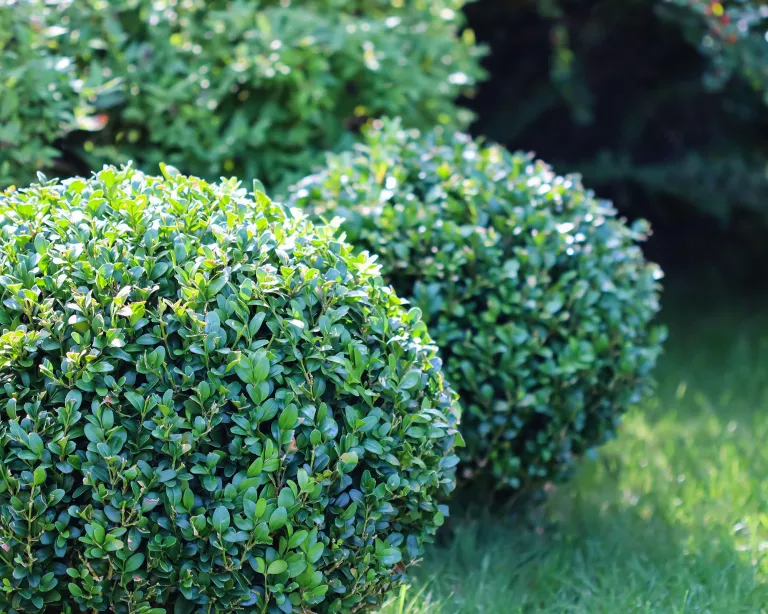
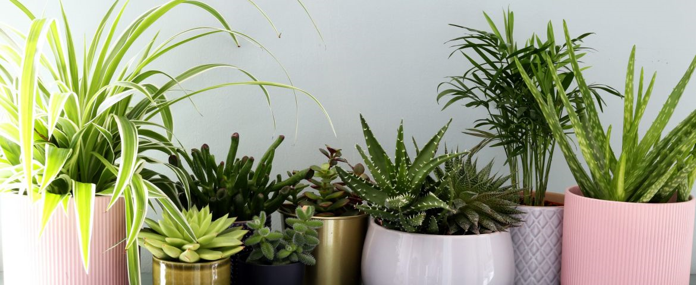
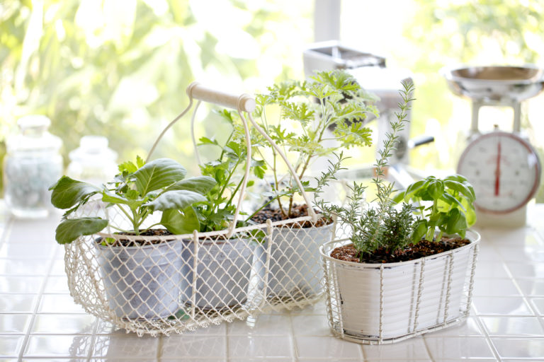

Flowers
-
Plant Can Help Improve Mental Health
Many studies have shown that adding greenery to spaces you spend lots of time in can reduce stress. Aside from asthetic prpose of adding some living plants into your house when yor eyes see the green hint of leaves and colorred flowers its reminded of outdoors. when we spend time in natural settins its rreduce mental fatigue and improvement of concentration levels.
 -
Plant Can Help Your Productivity
working from home has been an adjustment for many people. Home can provide a number of distractions-from the noise of kids and pets. A study from University of Exeter concluded that productivity increased 15% when plants were introduced to a previously bare office space. The pants helped with "an overall reduction of stress and improvement of calmness and wellbeing, ". Having greenery around can also lengthen someone attension span longer than those who are working without greenery around.
 -
Plants Keep Air Cleaner
Plants are natural air filters; they absorb carbon dioxide and release oxygen. some studies have shown that houseplants can remove up to 87% of air toxins in as little as 24 hours. Plants are known to cleans air from some irritant like (formaldehyde,benzene, and trichloroethylene).
